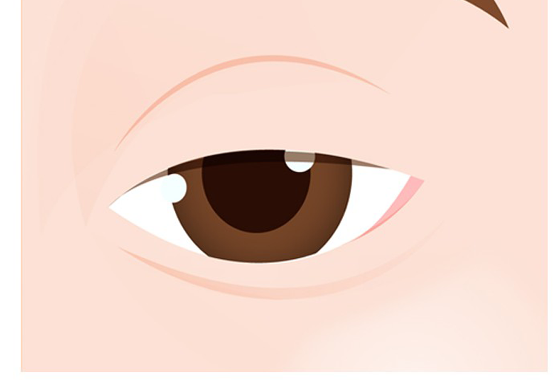
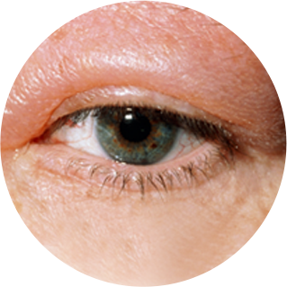
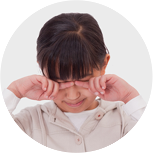
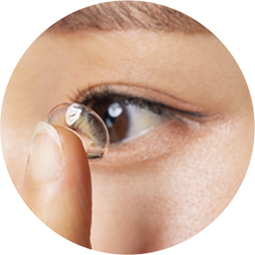
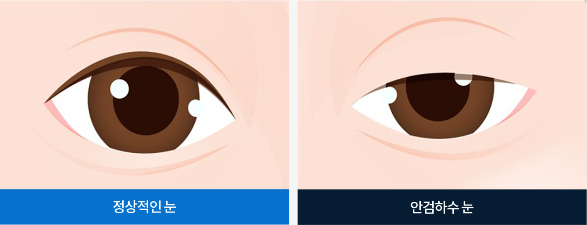

안검하수란?
시력장애가 발생하는 질환으로
적절한 치료가 중요합니다.

눈꺼풀을 올리는 눈꺼풀 올림근의 이상으로
윗눈꺼풀이 아래로 처지는 증상
눈꺼풀이 아래로 내려와 눈동자를 가리고있기 때문에 시야를
방해하여 시력이 저하
될 수있고 졸린 눈처럼 보이며 한 쪽 눈에
안검하수가 발생하면 눈의 크기가 서로달라 또한 물체를 보기
위하여 이마에 힘을 줘서 눈꺼풀을 들어올리기 때문에 이마에
주름이 생기기도 합니다.
나도 안검하수일까?
아래와 같은 증상이 있다면 안검하수를 의심해 볼 수 있습니다.
-
한 쪽 눈꺼풀이 쳐저 짝눈처럼 보인다.
-
한 쪽 눈꺼풀이 쳐저 짝눈처럼 보인다.
-
한 쪽 눈꺼풀이 쳐저 짝눈처럼 보인다.
-
한 쪽 눈꺼풀이 쳐저 짝눈처럼 보인다.
-
한 쪽 눈꺼풀이 쳐저 짝눈처럼 보인다.
-
한 쪽 눈꺼풀이 쳐저 짝눈처럼 보인다.
-
한 쪽 눈꺼풀이 쳐저 짝눈처럼 보인다.
-
한 쪽 눈꺼풀이 쳐저 짝눈처럼 보인다.
-
한 쪽 눈꺼풀이 쳐저 짝눈처럼 보인다.
안검하수의 종류
안검하수는 기능적과 외관상으로 불편을 주기 때문에
적절한 치료를 통해 개선하는 것이 좋습니다.
01 선천성 안검하수
안검하수는 생후 6개월 이상이 되면 검사가 가능하며 동공을
가리면 안검하수를 의심해야 하며 정면으로 사물을 주시하지
못하며 턱을 들고 보려고 하며 증상이 심하면 시력이 원활하게
발달하지 못하기 때문에 조기에 치료를 하는 것이 중요합니다.
02 후천성 안검하수
외상, 알레르기, 노화 다양한 원인에 의해 발생하며, 기능적인
문제뿐만 아니라 외관상으로도 문제가 되기 때문에 전문의와
상담 후 적절한 치료를 받는 것이 좋습니다.
안검하수가 발생하는 원인
안검하수의 대표적인 원인은 윗 눈꺼풀 올림근이 선천적으로
약하기 때문입니다. 눈꺼풀 올림근은 눈을 뜨게하는 역할을
하는데 근육이정상적으로기능을 하지 못하여 안검하수가
발생합니다. 또한 후천적인 원인에 의해 발생하기도 합니다.
노인에게 퇴행성 안검하수가 가장 많이 발생하며 그 밖에 외상
또는 만성적인염증, 백내장 등의안과 수술 후 나타나기도 합니다.
선천적 요인
퇴행성

만성적 염증
안과 수술후

외상

콘텍트렌즈
안검하수를 왜 치료해야 할까?
안검하수는 눈꺼풀 올림근의 기능이상으로 동공이 80% 미만으로
보이기 때문에 시야를 보는데에 불편함을 겪으며 이로 인해
시력저하의 문제가 발생하기도 하며 눈이 내려와 쳐지면서 항상
피곤해 보이는 인상을 줍니다. 또한 눈을 크게 뜨기 위해서
이마의 근육을 사용하기 때문에 이마에 주름이 발생하여
미용상으로도 보기 좋지 않습니다.

안검하수 수술을 통한 개선
수술방법
윗 눈꺼풀 올림근의 기능이 남아 있으면 약해진 윗 눈꺼풀
올림근의 일부를 절제하고 절제한 근육의 길이만큼
윗 눈꺼풀을 올려 붙이는 수술입니다.
수술특징
수술 후에 눈이 커지고 쌍커풀이 생깁니다.